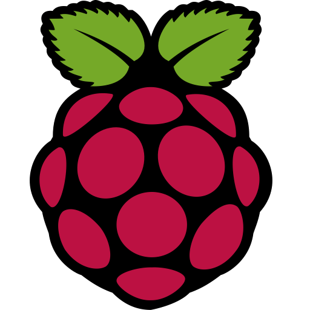
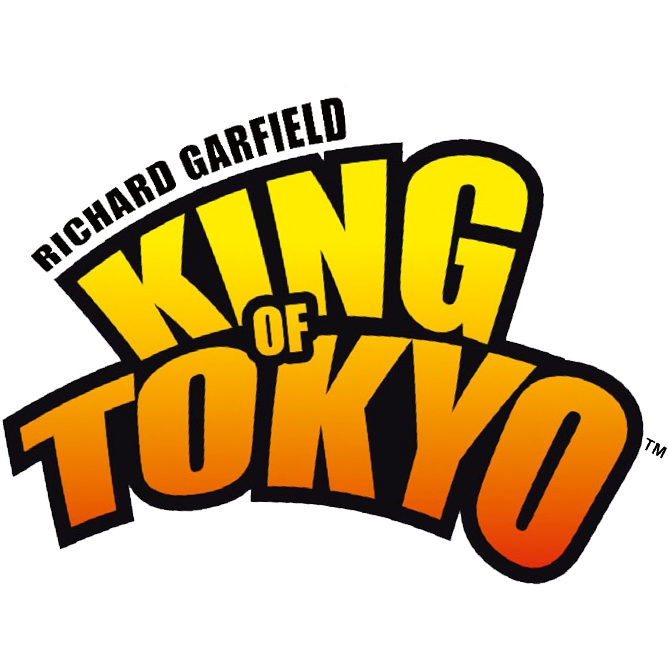
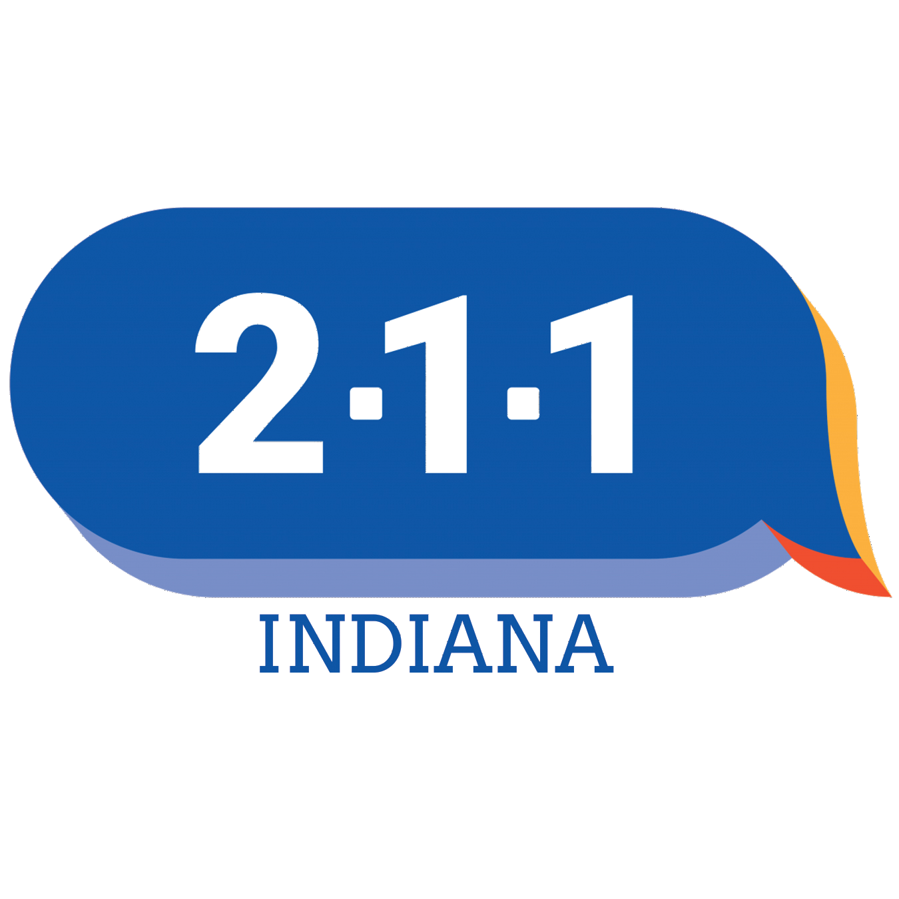
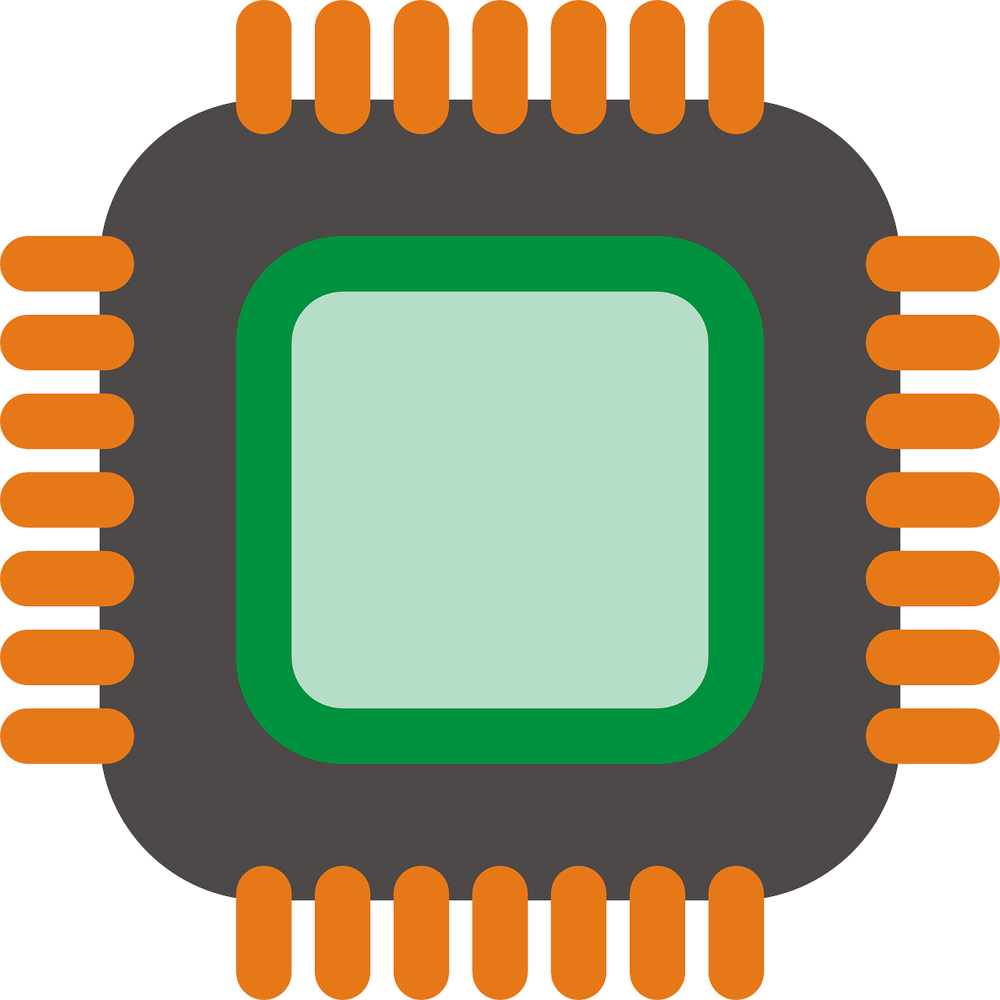
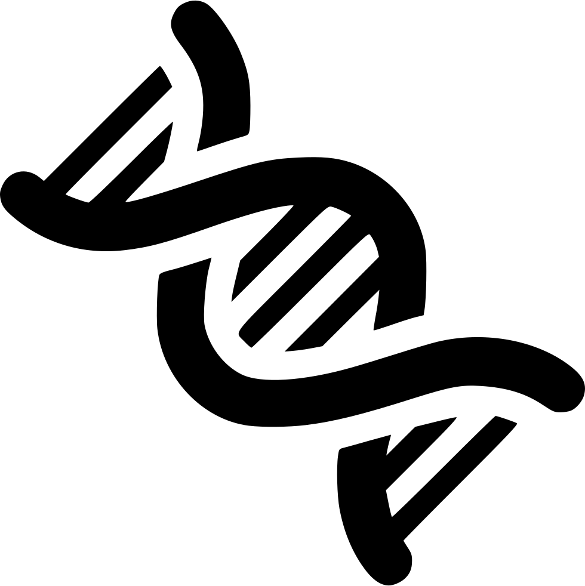
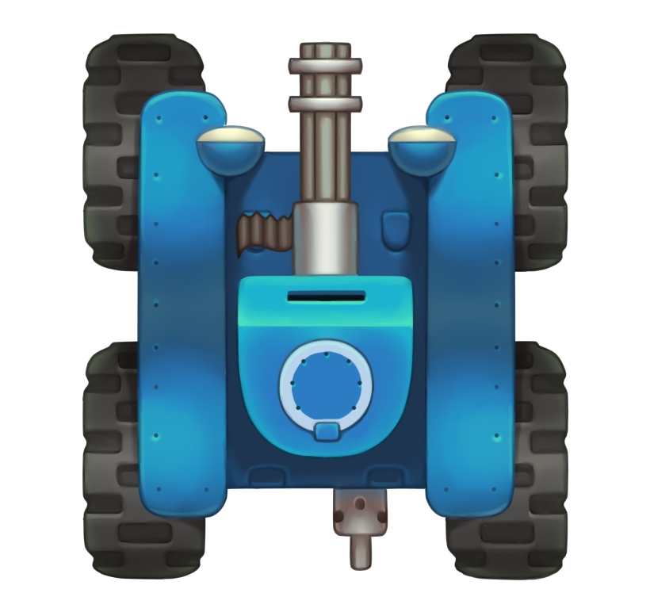

Portfolio Webpage - Summer 2024
Skills: HTML, CSS, Bootstrap, AWS, DNS ControlFor this project, I aimed to create this webpage to showcase all of the skills I have learned to you! I coded all of the documents from scratch, focusing on usability, hosting the code on GitHub. From there, Amazon Web Services retrieves the latest push and hosts it on their server. The domain is handled through GoDaddy and linked to AWS. It includes hosting for a developmental branch as well.
View it on GitHub

Captive Portal Scavenger Hunt - Summer 2024
Skills: Access Points, Captive Portals, LinuxWhen working on a scavenger hunt for Operation Catapult, a summer camp I worked in the summer of 2024, I was tasked with creating a clue using a Raspberry Pi 4. To do so, I got another network card for the Pi, and used RapsAP to host a remote access point with a password linked to the clue. From there, I used nodogsplash to create a captive portal to display a simple website giving a clue upon connection. The site was set to run 24/7, and I worked with campus network security to have it secured.
View it on GitHub

King of Tokyo Game Remake - Spring 2024
Skills: C#, Test Driven Development, Git WorkflowFor my Software Quality Assurance course, we worked to develop a digital version of King of Tokyo. The focus was to take a test driven workflow, challenging us to find the simplest way to implement features. Additionally, we followed the suggested GitHub workflow where we experienced pull requests and a large focus on branching. Overall, the project had a large focus on the types of testing where I developed a lot of professional level skills.
Request to see code
Database System - Winter 2023/2024
Skills: SQL, Sveltekit, Migrations, DatabasesThe purpose of this project was to produce a full database for meal prepping. To do so, we hosted the database with SQL Server and ran migrations to help us connect between our own development databases and the actual production set. We connected them with a user account linked the Sveltekit, where we built the frontend. We were able to populate a clean database from scratch in seconds due to the use of migrations.
Request to see code

Indiana 211 Website Redesign - Fall 2023
Skills: HTML, CSS, JavaScript, API Design, Working with ClientsWe had the fortune of working with Indiana 211 to design a proposal for a website redesign for their organization. In doing so, we were able to consult them and worked within the specifications they had and made adjustments based upon their feedback. As part of this development, I was able to build an API for the project that took some search terms in from the user, and would send back all of the valid results depending on their filters selected. In addition, we worked with other APIs such as the Google Map API for display as we learned the basics of web design.
View it on GitHub

CPU Design - Spring 2023
Skills: Verilog, CPU Components, Simulation, Team WorkWidely known as one of the harder projects to tackle at the university, my group worked to recreate the RISC-V architecture from scratch. We implemented each part of the CPU from scratch, and I had a major role in working to connect the components together. In addition, we had to test it with the clock to run specific code. In order to make this a bit easier for us, we also designed an assembler to keep our code in assembly.
Request to see code

Genetic Algorithm Project - Winter 2022/2023
Skills: Java, Multithreading, DebuggingIn my first real challenge in the CSSE curriculum, I worked with a team to do some minor research with genetic algorithms. I was the main coder in this project, and came up with a lot of the algorithms and how they would work, as well as found a solution for asynchronization to display the graph while running the algorithm, which was a large challenge for me in my second coding course.
Request to see code

Wii Tank Game Remake - Fall 2022
Skills: Python, Pair Programming, Source ControlMy first computer science project was inspired by the tank game showcased in on Wii Sports. We worked with collisions and physics, and how to connect them to graphics. My largest contribution had to do with drawing the tanks at different angles depending on the geometry.
Request to see code